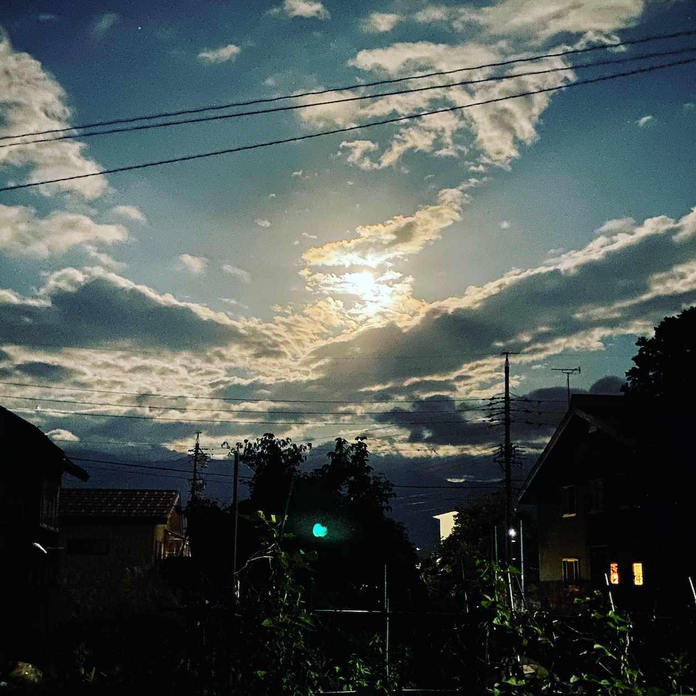

portfolio
about
skill
work
hobby
top
portfolio
My Portfolio
about me

居住地 長野県
大学卒業後、営業や一般事務職を経験後、秘書としてスタートアップへ転職。
東京から長野へUターン。
個人で議員ホームページを制作したことを通して、何かをカタチにする仕事に興味を持ちました。
独学でWeb制作の勉強をしている中、職業訓練校の存在を知り入所。
Web関連言語以外も学ぶ中で、一番強く惹かれたのはWeb制作でした。
これまでの業務を通して培ったきた傾聴、折衝力を活かし、
市場を分析した上で、お客様の想いを最適な形でカタチにするデザイナーを目指します。
Skill
Excel
マクロ、VBAを用いた効率化
Word ビジネス文書作成、契約書作成、校閲
PowerPoint アニメーションを用いた営業資料作成と営業活動
Access 統計、デジタルサイネージ掲載
C 関数
HTML ホームページ作成
CSS ホームページ作成
JavaScript jQuery
Procreite 静止画、動画作成
ladder PLC制御、フィールドネットワークのシステム構成、プログマラブル表示器の画面構築
Work
飯山市議会議員 常田のりこ
公式ホームページ
hobby
絵を描くこと、景色を眺めること、おいしいものを食べること
Contact
Name
Email